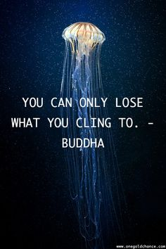
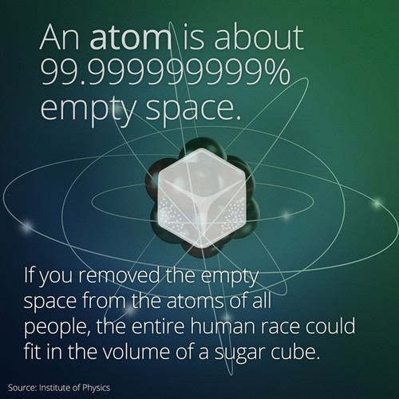

From inside the Table Mountain Areal Cableway... Gorgeous, right?
We found ourselves inside the aerial cableway car about to ascend Table Mountain
- a gorgeous outcropping of rock that juts from the earth beside the Atlantic ocean on the stunning port city of Cape Town in South Africa. The operator instructed us to let go of the railing in front of us. The floor beneath us was going to rotate as the mammoth machine lifted us skyward. “So please let go of the railing, ladies and gentlemen, that’s right - you need to let go now.” And then appropriately, however annoyingly, Disney’s Queen Elsa began to croon the now infamous tune, “Let It Go!” as the vehicle in the round lurched forward and our 360 degree panoramic journey began.
Being inside that gondola suspended on the side of Table Mountain is a really good illustration for pondering the paradoxical gift of emptiness on our Lenten journey. We had to let go in order to fully appreciate the panoramic vistas. We had to embrace nothing in order to take in everything the experience could offer.
One of the most gorgeous cities on the planet; flanked by Table Mountain - one of the new seven natural wonders of the world.
Sometimes emptiness is forced on us
...like leaving behind an old life chapter before you’ve reached the new one. Waving to the dock below, caught in the suspend space between: your heart in your throat, your pulse increasing, your stomaching dropping — you're stuck in the emptiness with not a whole lot to grab ahold of.
Sometimes emptiness is a choice.
We choose to cultivate an emptying season in order to release old habits, patterns, stories, or addictions in order to embrace the person we’ve been called to be in this world: beloved.
Around The Table last night we considered Jesus’ response to the Pharisees’ question “When will the Kingdom of God come?” to which he replied, “The Kingdom of God can’t be detected by visible signs. You won’t be able to say, ‘Here it is!’ or ‘It’s over there!’ For the Kingdom of God is already among you.” He then went on to speak in a little bit of a riddle: “If you cling to your life, you will lose it, and if you let your life go, you will save it.” (Luke 17:20-21; 33)
What’s up with wise people and riddles anyhow? Its been attributed to the Buddha the following words: “You can only lose what you cling to.”

Emptiness is not to be confused with escape. It can be a conscious choice to stop clinging, producing and reacting in order to tap into the root of your flourishing, so you can contribute to the flourishing of the world.
The Christian story tells us we are bearers of light. We pondered last night if we lacked anything for finding ourselves inside the reach of the light of God’s love. We also asked if our lives were too full, obstructing us from knowing our beloveddness in God’s eyes.
I heard something in our discussion last night that reminded me, sometimes our lives can be incredibly full and empty at the same time.
Take a look at your hand:
according to science, the structure of atoms that make up your hand is 99.9999999% empty space? On a relative scale if we placed a grape seed to represent an atom in the center of the Cowboy’s football stadium in Laramie, it's electron cloud would be found at the very edge of the stadium. Emptiness is written into the physics of our universe.

In the practice of Christianity, asceticism has been a path followed by some as a way to say no to certain distractions in order to embrace truer realities. The following story helps us connect where the gift of emptiness meets with our Lenten practices:
The Ascetic Heart
A dialogue recounting the interactions of a young disciple and an elder, on the contours of the ascetic life.
A boy once approached his father, ‘Old man, why do you fast?’
The father stood silent, bringing heart and mind together, and then replied:
‘Beloved boy,
I fast to know what it is I lack.
For day by day I sit in abundance, and all is well before me;
I want not, I suffer not,
and I lack but that for which I invent a need.
But my heart is empty of true joy,
filled, yet overflowing with dry waters.
There is no room left for love.
‘Thus I fast, beloved,
to know the dust in which I dwell.
I take not from that which I might take,
for in its absence I am left empty,
and what is empty stands ready to be filled.
I turn from what I love, for my love is barren,
and by it I curse the earth.
I turn from what I love, that I may purify my loving,
and move from curse to blessing.
A dialogue recounting the interactions of a young disciple and an elder, on the contours of the ascetic life.
A boy once approached his father, ‘Old man, why do you fast?’
The father stood silent, bringing heart and mind together, and then replied:
‘Beloved boy,
I fast to know what it is I lack.
For day by day I sit in abundance, and all is well before me;
I want not, I suffer not,
and I lack but that for which I invent a need.
But my heart is empty of true joy,
filled, yet overflowing with dry waters.
There is no room left for love.
‘Thus I fast, beloved,
to know the dust in which I dwell.
I take not from that which I might take,
for in its absence I am left empty,
and what is empty stands ready to be filled.
I turn from what I love, for my love is barren,
and by it I curse the earth.
I turn from what I love, that I may purify my loving,
and move from curse to blessing.
Take a look at your hand again:
are you clinging to your life? Do you need to let go of anything in order to embrace the gift of emptiness?
God's kingdom, or God's reign of love - is already among us!
Here's is to emptier lives rooted in our belovedness,
Pastor Libby